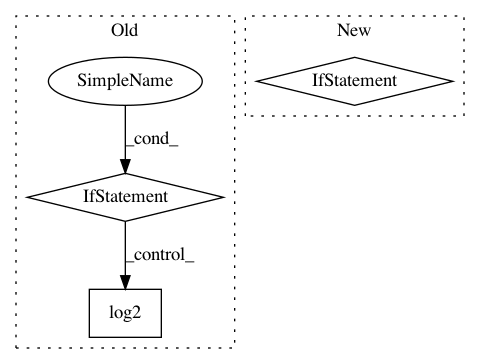

6b2a79fd202567f1869518efe8b4b68b9d3a3bbf,qiskit/aqua/translators/ising/vertex_cover.py,,sample_most_likely,#Any#Any#,188
Before Change
Returns:
numpy.ndarray: binary string as numpy.ndarray of ints.
if isinstance(state_vector, dict) or isinstance(state_vector, OrderedDict):
// get the binary string with the largest count
binary_string = sorted(state_vector.items(), key=lambda kv: kv[1])[-1][0]
x = np.asarray([int(y) for y in list(binary_string)])
return x
else:
n = int(np.log2(state_vector.shape[0]))
k = np.argmax(np.abs(state_vector))
x = np.zeros(n)
for i in range(n):
x[i] = k % 2
k >>= 1
return x
def get_gset_result(x):
Get graph solution in Gset format from binary string.
Args:
After Change
def sample_most_likely(n=None, state_vector=None):
from .common import sample_most_likely as redirect_func
if n is not None:
warnings.warn("n argument is not need and it will be removed after Aqua 0.7+",
DeprecationWarning)
warnings.warn("sample_most_likely function has been moved to "
"qiskit.aqua.translators.ising.common, "
"the method here will be removed after Aqua 0.7+",
DeprecationWarning)
In pattern: SUPERPATTERN
Frequency: 3
Non-data size: 3
Instances
Project Name: Qiskit/qiskit-aqua
Commit Name: 6b2a79fd202567f1869518efe8b4b68b9d3a3bbf
Time: 2019-08-26
Author: chenrich@us.ibm.com
File Name: qiskit/aqua/translators/ising/vertex_cover.py
Class Name:
Method Name: sample_most_likely
Project Name: tensorly/tensorly
Commit Name: 55ed12ebcce6cd71945fef8387767484c80abc2c
Time: 2021-03-04
Author: taylorpatti@g.harvard.edu
File Name: tensorly/metrics/entropy.py
Class Name:
Method Name: vonNeumann_entropy
Project Name: pfnet/optuna
Commit Name: 505ffbb83f5179d55ce815a710126bc503ab2b8f
Time: 2020-04-26
Author: imamura@ms.k.u-tokyo.ac.jp
File Name: optuna/pruners/hyperband.py
Class Name: HyperbandPruner
Method Name: __init__